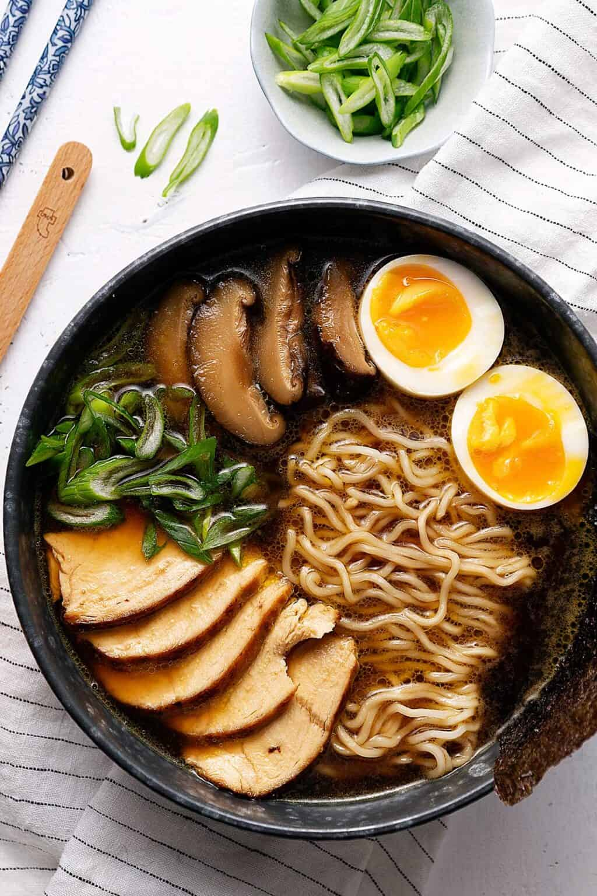

Ramen

Description
Ramen is a type of Japanese noodle soup that has the main components of flavourful homemade broth and noodles. The broth is usually made with bones and cooked for hours, to get that deep umami flavor. The noodles are usually handmade like my homemade egg noodles.
Ingredients
- Chicken stock
- Shiitake
- Nori sheets
- Butter
- Garlic cloves
- Ginger
- Salt
- Chicken Breast
- Spring Onion
- Sugar
- Dark Soy Sauce
- Eggs
- Egg noodles
- Low Sodium Soy Sauce
- Oil
Steps
- Preheat oven at 400ºF(200ºC) using upper and lower heat. Boil some water in 2 pots. Heat an iron skillet on medium high heat with a bit of oil. Prepare a bowl of water with ice cubes.
- Add everything in a pot, cover and simmer for 20 minutes.
- Add all ingredients in a bowl and mix well. Char the chicken on a hot iron skillet for 1-2 minutes, on both sides. Then place in the oven on the upper ⅓ rack, for 10-15 minutes or until fully cooked.
- Once the water is boiling in a pot, gently add in the eggs and immediately lower the fire. Leave to simmer for 6 ½ minutes and then place the eggs into the ice water bowl. Leave to cool completely before peeling them. Set aside.
- Add the noodles into another pot of boiling water and cook according to the packet's instructions. Drain the noodles and set aside.
- Discard garlic and ginger from the broth. Slice the shiitake and some spring onion. Slice the chicken in thin slices.
- Ladle some broth into 2 bowls. Add in the noodles, followed by chicken slices and shiitake. Slice the eggs and place in each bowl. Finish off with some sliced spring onion and tuck in a piece of nori sheet on one side of the bowl. Serve immediately!
Home